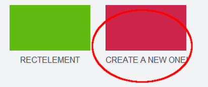

<!DOCTYPE html>
<html>
<head>
  <title>HappyGUI</title>
  <link rel="stylesheet" type="text/css" href="css/default.css" />
  <meta name="viewport" content="width=device-width, initial-scale=1, maximum-scale=1">
</head>
<body>
<div class="wrapper">
  <div id="page"></div>
  <div id="editor" class="hidden">
    <!-- editorViews will be imported here -->
  </div>
  <div id="dialog_code" class="hidden">
  </div>
  <div id="dialog_colorpicker" class="hidden">
    <div class="inner">
      <div class="row">
        <div class="colorpicker green_bg"></div>
        <div class="colorpicker pink_bg"></div>
        <div class="colorpicker yellow_bg"></div>
        <div class="colorpicker orange_bg"></div>
      </div>
      <div class="row">
        <div class="colorpicker white_bg"></div>
        <div class="colorpicker gray_bg"></div>
        <div class="colorpicker dgray_bg"></div>
        <div class="colorpicker black_bg"></div>

      </div>
    </div>
  </div>

  <div id="preview" class="hidden">
    <!-- elements drawn by the user -->
  </div>
</div>

<script type="text/javascript" src="js/handlebars.js"></script>
<script type="text/javascript" src="js/socket.io.js"></script>
<script type="text/javascript" src="build/build.js"></script>

<script id="homepage_tpl" type="text/html">
  <div class="btn-block">
    <a href="#collection" class="btn green_bg">Open</a>
    <a href="#new" class="btn pink_bg">Create new</a>
    <a href="#help" class="btn yellow_bg">Help</a>
  </div>
</script>

<script id="newpage_tpl" type="text/html">
  <div class="centred" id="newpage">
    <div><input id="collectionName" placeholder="Enter a name" value="" autofocus="autofocus"/></div>
    <div id="collectionSave" class="btn orange_bg">Save</div>
  </div>
</script>

<script id="help_tpl" type="text/html">
  <div>

<p><h1><a id="help-addel">Adding elements</a></h1></p>
<p>When the editor is open, there is a list of elements on the left and a preview of the layout on the right. To add something to the layout, simply select the element you want from the list by tapping it. This will bring up an editor menu, where you can change the element's properties such as background colour or border width. On the preview side you can move the element to any position on the page.</p>
<br>
<p>When you're done, clicking the green Editor button will take you back to the main editor.</p>
<br>

<p><h1><a id="help-changebg">Changing the background colour</a></h1></p>
<p>Tapping the long bar at the top of the left hand panel on the editor screen will bring up a list of coloured buttons. Select the colour you want for your background by tapping on the appropriate button, and it will bring you back to the editor page with your new background colour.</p>
<br>

<p><h1><a id="help-open">Opening a different file</a></h1></p>
<p>On the editor page there is a yellow Collection button. Tapping this will open a list of all the files you've created so far - simply tap the one you want to open it.</p>
<br>

<p><h1><a id="help-new">Creating a new file</a></h1></p>
<p>On the editor page there is a yellow Collection button. Tapping this will open a list of all the files you've created so far; beside these buttons will be a button that says "Create a new one!". Clicking it will bring up a textbox - put in a name for your new file and click save and it will take you to the editor menu.</p>
<br>

<br>

<p><h1><a id="help-delete">Deleting a file</a></h1></p>
<p>To delete a file, just click the red Delete button on the editor page.</p>
<br>

<p><h1><a id="help-save">Saving</a></h1></p>
<p>Every time you make a change, however small, the app will automatically save it for you. No need to worry about forgetting to save or running out of battery and losing work! </p>
<br>

<p><h1><a id="help-stream">Streaming</a></h1></p>
<p>Tap the blue Stream button on the editor window to let other people watch in real time as you create your layout. </p>
<br>

<p><h1><a id="help-about">About</a></h1></p>
<p>HappyGUI is a drag and drop layout editor for Microsoft's TouchDevelop platform, created by four UCL students. It provides a graphical interface for designing app layouts that can then be exported into Touchdevelop code and further developed.</p>
<br>
</div>
</script>

<script id="collection_tpl" type="text/html">
  {{#if collection }}
  <div class="topcentered">
    {{#collection}}
      <a href="#editor/{{@index}}">
      <div class="collection">
        <div class="preview">
          <!-- Image here -->
        </div>
        <div class="title">{{name}}</div>
      </div>
      </a>
    {{/collection}}
    <a href="#new">
      <div class="collection">
        <div class="preview pink_bg">
          <!-- Image here -->
        </div>
        <div class="title">Create a new one!</div>
      </div>
    </a>
  </div>
  {{else}}
  <div class="centred">You have no apps, <a href="#new">create one!</a></div>
  {{/if}}
</script>

<script id="editor_tpl" type="text/html">
  <header>
    <div id="cp_backgroundColor" class="colorpicker go-cpDialog" style="background-color: {{backgroundColor}};">
    </div>
  </header>

  <section id="elementsNew">
    <div class="row">
      <div class="elementNew" id="rectNew">
        &nbsp;
      </div>
      <div class="elementNew" id="circleNew">
        &nbsp;
      </div>
      <div class="elementNew" id="textNew">
        T
      </div>
      <div class="elementNew" id="cameraNew">
        Camera
      </div>
    </div>
    <div class="row">
      <div class="elementNew" id="imageNew">
        Image
      </div>
    </div>
  </section>

  <footer>
    <a class="btn-editor btn-delete">Delete</a>
    <a class="btn-editor go-collection yellow_bg">Collection</a>
    <a class="btn-editor go-code green_bg">Code</a>
    {{#stream}}<a id="stream" class="btn-editor blue_bg">Stream</a>{{/stream}}
  </footer>

</script>

<script id="element_editor_tpl" type="text/html">
  <header>

  </header>

  <section>
    {{#hasBackgroundColor}}
    <div id="cp_backgroundColor" class="colorpicker go-cpDialog" style="background-color: {{backgroundColor}};">
    </div>
    {{/hasBackgroundColor}}
    {{#hasBorderColor}}
    <div id="cp_borderColor" class="colorpicker go-cpDialog" style="background-color: {{borderColor}};">
    </div>
    {{/hasBorderColor}}
    {{#hasFontColor}}
    <div id="cp_fontColor" class="colorpicker go-cpDialog" style="background-color: {{fontColor}};">
    </div>
    {{/hasFontColor}}
    {{#hasText}}
    <div class="sizemodifier sm_text">
      <label>
        <input value="{{text}}" id="sm_text" name="sm_text" />
      </label>
    </div>
    {{/hasText}}
    {{#hasBorderThickness}}
    <div class="sizemodifier sm_borderThickness">
      <label>Border
        <input value="{{borderThickness}}" id="sm_borderThickness" name="sm_borderThickness" />
       <div class="sm_button sm_plus">+</div>
       <div class="sm_button sm_minus">-</div>
      </label>
    </div>
    {{/hasBorderThickness}}
    {{#hasFontSize}}
    <div class="sizemodifier sm_fontSize">
      <label>Size
        <input value="{{fontSize}}" id="sm_fontSize" name="sm_fontSize" />
        <div class="sm_button sm_plus">+</div>
        <div class="sm_button sm_minus">-</div>
      </label>
    </div>
    {{/hasFontSize}}
    {{#hasWidth}}
    <div class="sizemodifier sm_width">
      <label>Width
        <input value="{{width}}" id="sm_width" name="sm_width" />
        <div class="sm_button sm_plus">+</div>
        <div class="sm_button sm_minus">-</div>
      </label>
    </div>
    {{/hasWidth}}
    {{#hasHeight}}
    <div class="sizemodifier sm_height">
      <label>Height
        <input value="{{height}}" id="sm_height" name="sm_height" />
        <div class="sm_button sm_plus">+</div>
        <div class="sm_button sm_minus">-</div>
      </label>
    </div>
    {{/hasHeight}}
    {{#hasRadius}}
    <div class="sizemodifier sm_r">
      <label>Radius
        <input value="{{r}}" id="sm_r" name="sm_r" />
        <div class="sm_button sm_plus">+</div>
        <div class="sm_button sm_minus">-</div>
      </label>
    </div>
    {{/hasRadius}}
  </section>

  <footer>
    {{#isDeletable}}
    <a class="btn-editor btn-delete">Delete</a>
    {{/isDeletable}}
    <a class="btn-editor go-editor green_bg">Editor</a>
  </footer>

</script>

<script type="text/javascript">
  // Dependencies
  var StorageCtrl = require('happygui-storagectrl');
  var Streaming = require('happygui-streaming');
  var Router = require('apily-router');
  var EditorView = require('happygui-editorview');
  var PreviewView = require('happygui-previewview');
  var PageView = require('happygui-pageview');
  var ActivityFactory = require('happygui-activityfactory');

  // Main
  var router = new Router();
  var editor = new EditorView({container: 'editor', colorpicker: 'dialog_colorpicker', code: 'dialog_code'});
  var preview = new PreviewView({container: 'preview'});
  var page = new PageView({container: 'page'});
  var activities = ActivityFactory(editor, preview, page);

  // Clean before router cleans
  window.addEventListener("hashchange", function() {
    editor.hide();
    editor.colorpicker.hide();
    editor.code.hide();
    // TODO move preview paper clear from here
    // TODO dont clear/redraw when same collection
    preview.paper.clear();
    preview.hide();
    page.hide();
  }, true);

  router
      .route('#homepage', activities.homepage)
      .route('#new', activities.newpage)
      .route("#help", activities.help)
      .route("#collection", activities.collection)
      .route('#editor/:collection', activities.editor)
      .route('#code/:collection', activities.code)
      .route('#editor/:collection/:type', activities.element_editor)
      .route('#editor/:collection/:type/:id', activities.element_editor)
      .route('#colorpicker/:collection/:type', activities.colorpicker)
      .route('#colorpicker/:collection/:type/:id', activities.element_colorpicker)
      .history.start();


  // This happens on page refresh
  if (window.location.hash === "") {
    window.location.hash = "#homepage"
  } else {
    //TODO load view
  }

  Streaming.connect();

</script>

</body>
</html>